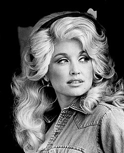
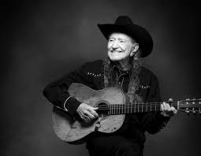

Johnny Cash

Johnny Cash, känd som "The Man in Black", var en pionjär inom countrymusiken. Hans låtar präglades av ärlighet, rå känsla och en unik röst.
Dolly Parton
Dolly Parton är en av de mest älskade countryartisterna någonsin. Med en karriär som spänner över decennier har hon levererat klassiska låtar och inspirerat miljontals fans.
Willie Nelson
Willie Nelson är en ikon inom outlaw-country. Med sin avslappnade stil och poetiska texter har han skapat musik som lever vidare genom generationer.